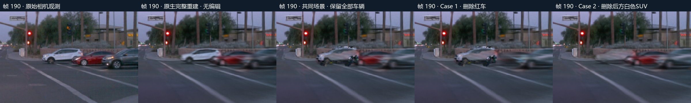
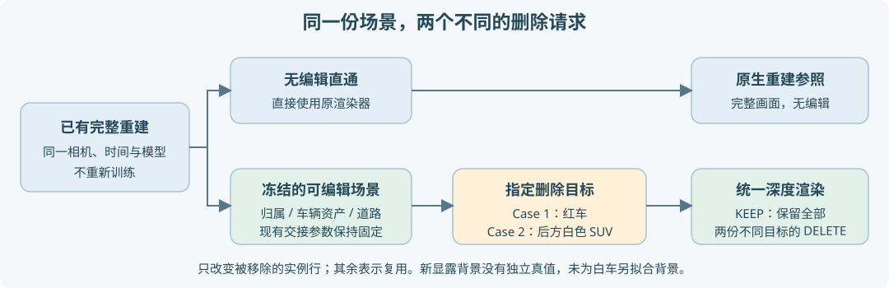

主视图此前将“原生来源删红车”和“当前场景删红车”并列，错误地把方法对照当成第二个编辑case。本次按用户澄清补齐scene-029后方白色SUV的删除，scene-065仍为独立街段。


两种查询复用同一场景、相机、资产、道路和交接参数，仅过滤不同实例行。红车是场景内a69/native70，白色SUV为a24/native25。89帧KEEP和原红车删除与既有浮点结果均差0；白车删除的白车组贡献为0，红车身份行未过滤，灰车也未被指定删除。目标组归零不替代画质验收。
未重训，也未为白车删除后显露的背景另外拟合道路或生成资产。该背景没有独立真值。保留原生来源删红车，但收在方法对照中；主视图仅列一个删红车case和一个删白车case。两个case各有四个锚帧float32贡献，切换同步读取正确结果；删除白车时不把原白车表面的深度当新背景真值。
267张PNG、四帧白车删除float32、配置与源码组成60,968,960B/275文件归档，已取回逐文件核验。全89帧五列、状态切换、异步跳帧和诊断记录v2导入导出经实际viewer.js的DOM/Canvas替身验证；不是浏览器视觉验收。旧v1记录仍可读取，v2记录写明删除track并拒绝不匹配目标。
AutoDL保持开机，优化更新0，无电源操作。人工verdict保持空值。全89帧查询验收 · 交付收据 · 资源与交互逻辑检查
context：12820461091157089924_5202_916_5222_916；红车：lvxXvuSB3kueTyP2ignh7w；白色SUV：DwjZr_bYUSZOr-XDGregnA。原生10K与旧资产来自waymo_val029_v44_20261108_r1；新查询保存在waymo_val029_dual_delete_20261109_r1，旧现场不改写。